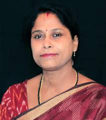

WHAT OUR STUDENT SAYS
Testimonials are statements or endorsements from people who share their positive experiences or opinions about a product, service, organization, or individual. They are often used in marketing or promotional materials to build trust and credibility.
Dr.Girija Nandini presently working as an Associate Professor (Finance) in the School of Management
Studies, CUTM, Bhubaneswar. Completed her MBA from Biju Pattnaik University of Technology having
specialization in Finance. She has done her Ph.D. entitled , Indian Stock Market: Study of seasonal effects
in the present era, from Utkal University, Bhubaneswar, Odisha in 2014.She has 17 years of teaching experience
in different B schools in Odisha and her areas of interest focused on Security analysis and Portfolio Management,
Project Appraisal, Financial management and Cost and Management Accounting.
Dr.Girija Nandini

Prof. Anita Patra comes with over 20 years of experience in academia. She has a proven track record of administration
in holding various positions like Dean Faculty Development, PGP Coordinator, School of Management, Dean School of
Engineering and Technology in Centurion University of Technology and Management (CUTM). She has a keen interest in
women entrepreneurship and rural entrepreneurship. Prof. Anita has various academic degrees to her credit i.e. Ph.D.
in Management from Berhampur University, Odisha, MBA with a specialization in Finance from Berhampur University, Odisha.
Currently she is serving as a Professor in the School of Management and also Registrar of Centurion University of
Technology and Management (CUTM), Odisha.